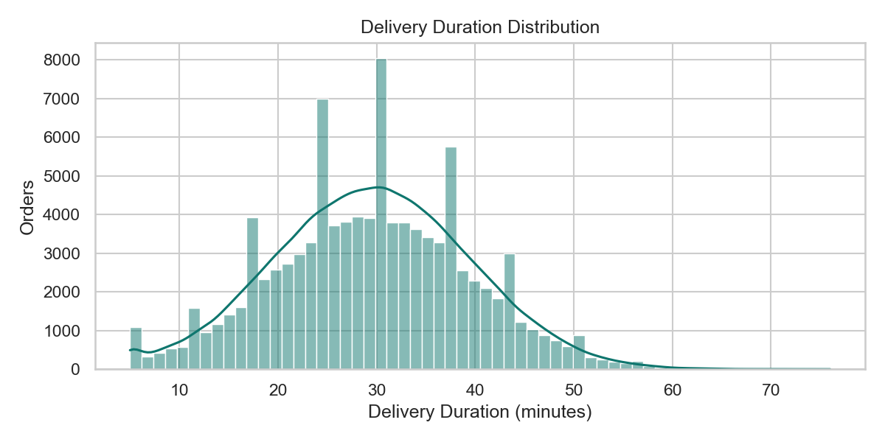
Delivery Duration Distribution
Shows the spread of delivery times and helps identify typical delivery windows and tail delays.
These visualizations are generated from the notebook and Python analysis pipeline. Each chart below explains what it shows and why it matters.

Shows the spread of delivery times and helps identify typical delivery windows and tail delays.
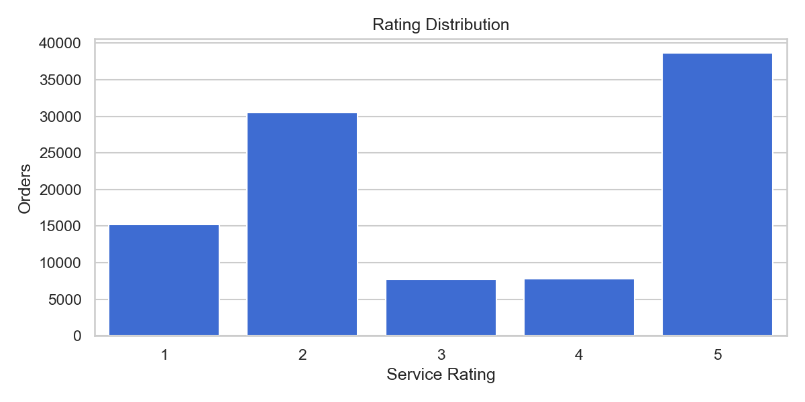
Shows how customer ratings are distributed across all orders and where satisfaction is concentrated.
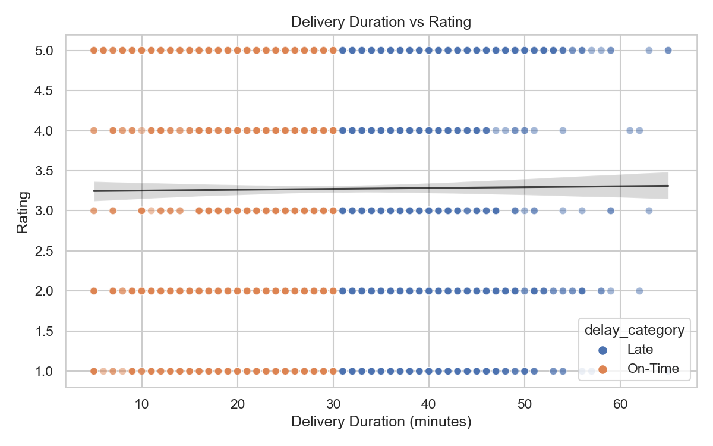
Compares delivery duration and rating per order to check whether slower deliveries reduce ratings.
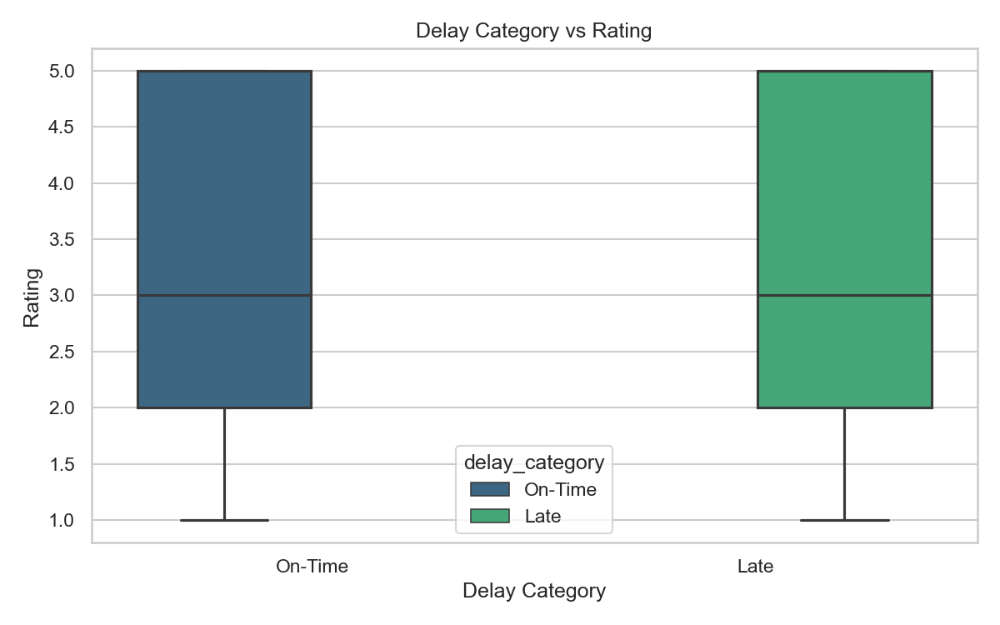
Compares rating ranges for on-time and late orders to highlight variation and median behavior.
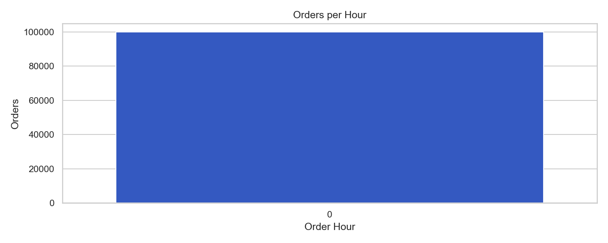
Shows order volume by hour. In this dataset, hour values collapse due to minute-second time format.
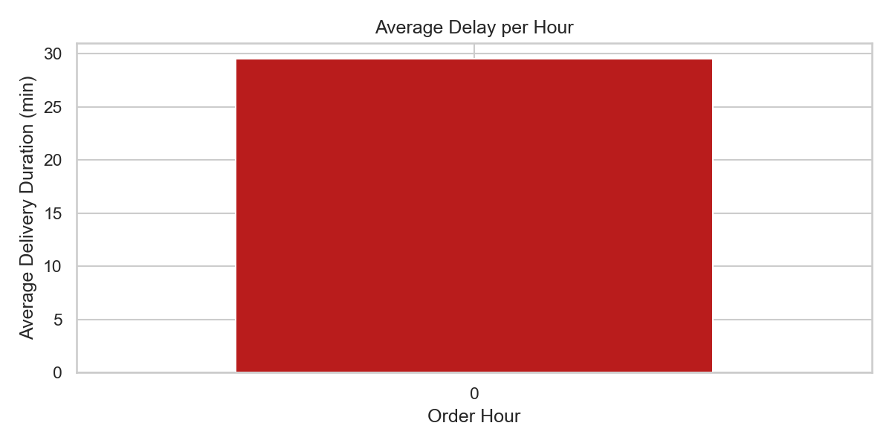
Shows average delay by hour. Useful for finding peak-delay periods when true hour data is available.
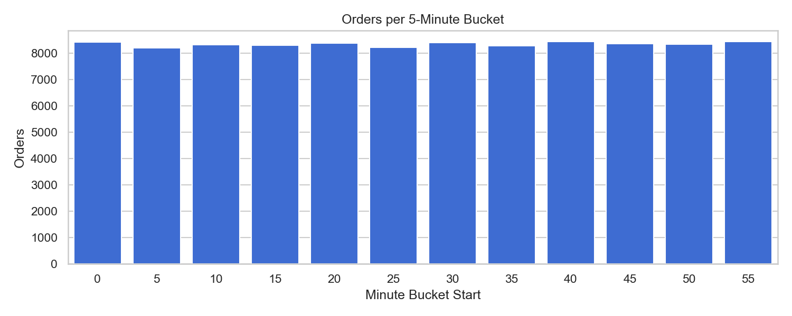
Fallback time analysis using 5-minute buckets when hour-level information is not meaningful.
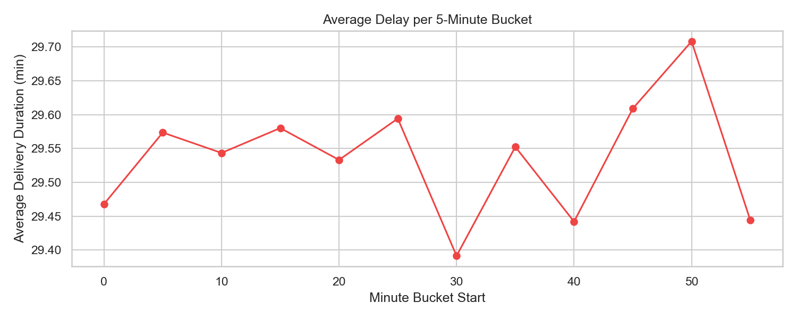
Shows delay fluctuations across minute buckets and highlights the bucket with highest average delay.
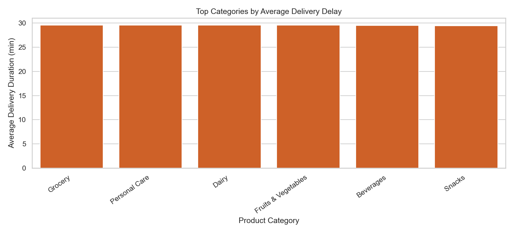
Compares average delay across product categories to identify the most operationally challenging segments.
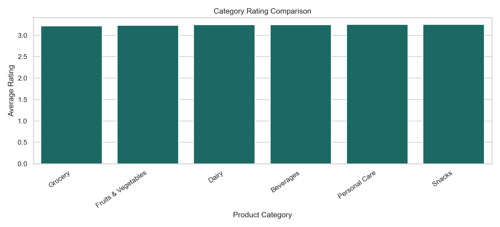
Shows which categories are rated lower and may need experience improvement.
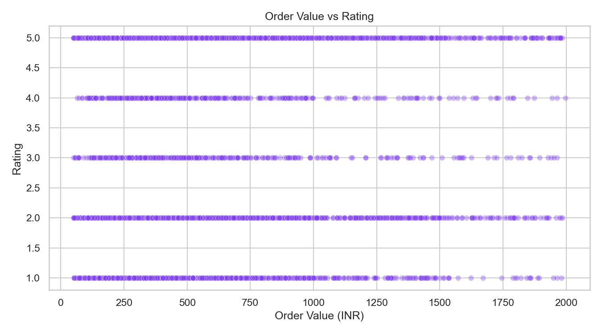
Checks if higher-value orders receive better ratings. In this case, correlation is near zero.
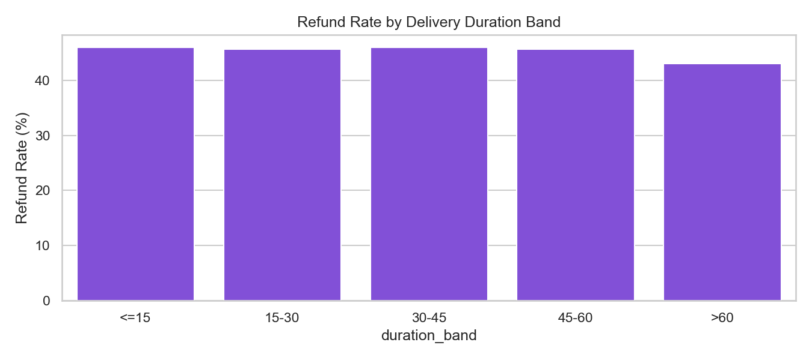
Shows how refund risk changes as delivery duration grows, useful for proactive customer recovery actions.
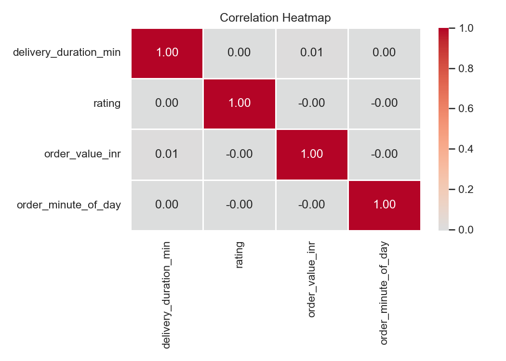
Summarizes pairwise relationships among key numerical variables used for diagnostic and model context.